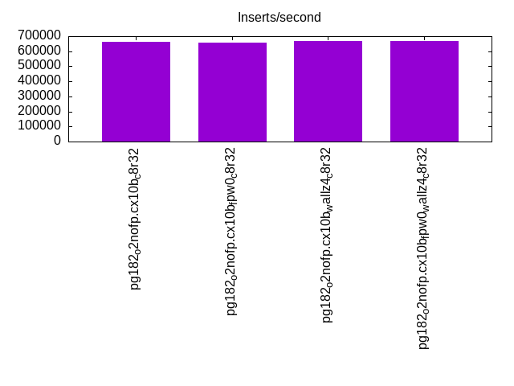
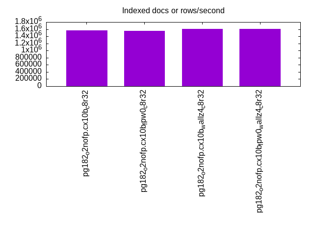
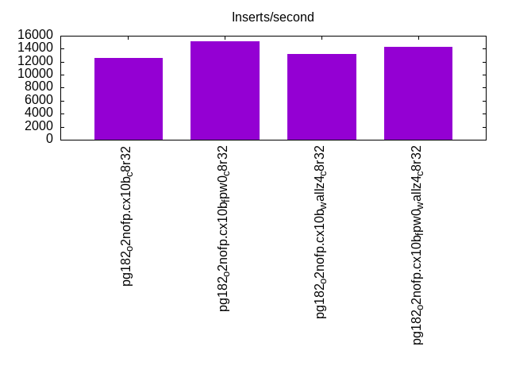
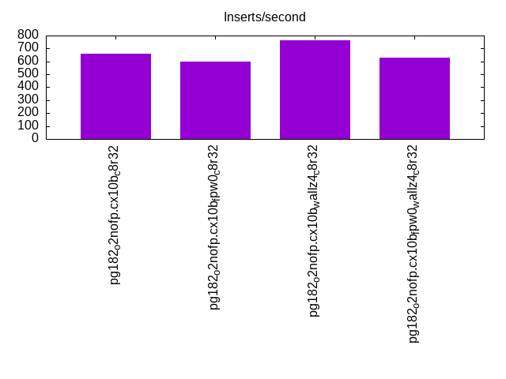
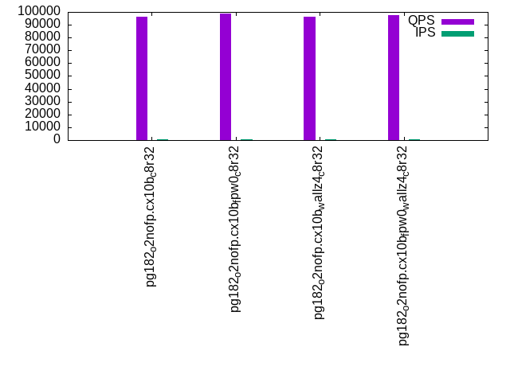
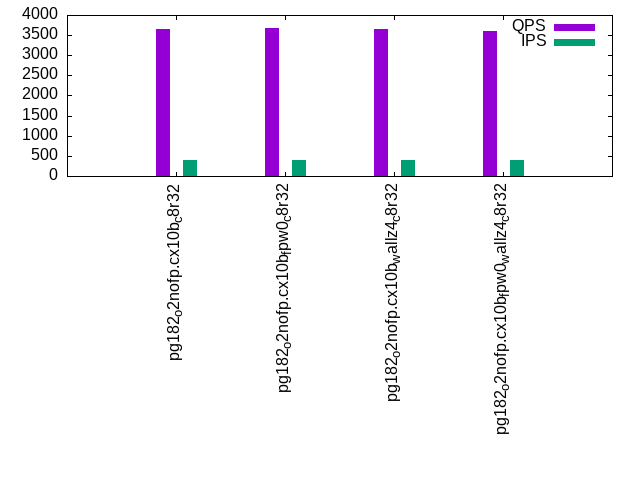
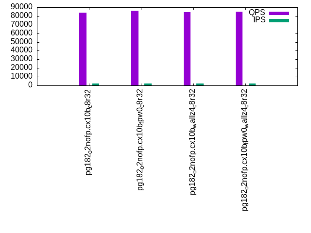
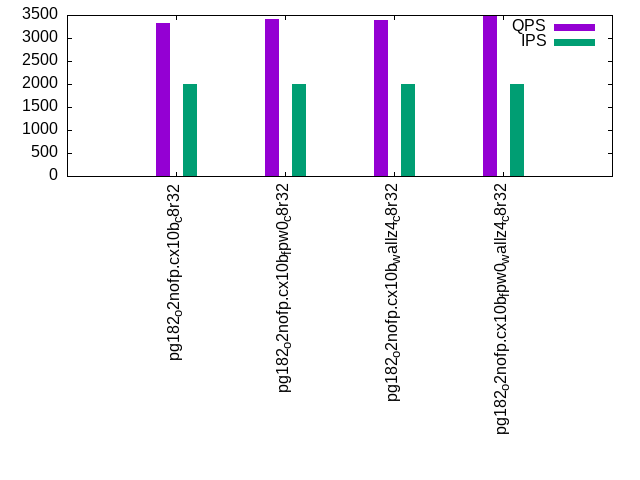
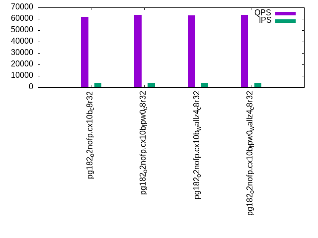
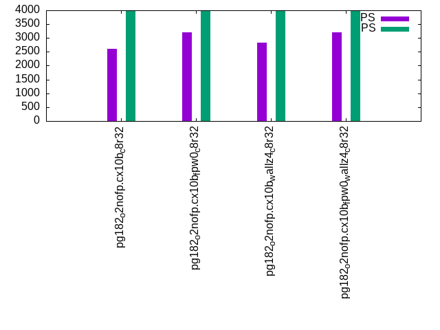

This is a report for the insert benchmark with 800M docs and 4 client(s). It is generated by scripts (bash, awk, sed) and Tufte might not be impressed. An overview of the insert benchmark is here and a short update is here. Below, by DBMS, I mean DBMS+version.config. An example is my8020.c10b40 where my means MySQL, 8020 is version 8.0.20 and c10b40 is the name for the configuration file.
The test server has 8 AMD cores, 32G RAM and an NVMe device for the database. The benchmark was run with 4 clients and there were 1 or 3 connections per client (1 for queries or inserts without rate limits, 1+1 for rate limited inserts+deletes). It uses 4 tables with a table per client. It loads 200M rows per table without secondary indexes, creates 3 secondary indexes per table, then inserts 4m+1m rows per table with a delete per insert to avoid growing the table. It then does 6 read+write tests for 1800s each that do queries as fast as possible with 100,100,500,500,1000,1000 inserts/s and the same for deletes/s per client concurrent with the queries. The database is IO-bound for most benchmark steps. Clients and the DBMS share one server.
The tested DBMS are:
The numbers are inserts/s for l.i0, l.i1 and l.i2, indexed docs (or rows) /s for l.x and queries/s for qr100, qp100 thru qr1000, qp1000" The values are the average rate over the entire test for inserts (IPS) and queries (QPS). The range of values for IPS and QPS is split into 3 parts: bottom 25%, middle 50%, top 25%. Values in the bottom 25% have a red background, values in the top 25% have a green background and values in the middle have no color. A gray background is used for values that can be ignored because the DBMS did not sustain the target insert rate. Red backgrounds are not used when the minimum value is within 80% of the max value.
| dbms | l.i0 | l.x | l.i1 | l.i2 | qr100 | qp100 | qr500 | qp500 | qr1000 | qp1000 |
|---|---|---|---|---|---|---|---|---|---|---|
| pg182_o2nofp.cx10b_c8r32 | 660066 | 1571709 | 12618 | 658 | 96102 | 3648 | 83960 | 3317 | 61643 | 2613 |
| pg182_o2nofp.cx10b_fpw0_c8r32 | 656814 | 1559454 | 15152 | 597 | 98649 | 3672 | 86332 | 3404 | 63584 | 3198 |
| pg182_o2nofp.cx10b_wallz4_c8r32 | 665557 | 1603207 | 13169 | 761 | 96560 | 3655 | 84370 | 3394 | 63059 | 2828 |
| pg182_o2nofp.cx10b_fpw0_wallz4_c8r32 | 668338 | 1603207 | 14235 | 626 | 97627 | 3607 | 85022 | 3479 | 63436 | 3200 |
This table has relative throughput, throughput for the DBMS relative to the DBMS in the first line, using the absolute throughput from the previous table. Values less than 0.95 have a yellow background. Values greater than 1.05 have a blue background.
| dbms | l.i0 | l.x | l.i1 | l.i2 | qr100 | qp100 | qr500 | qp500 | qr1000 | qp1000 |
|---|---|---|---|---|---|---|---|---|---|---|
| pg182_o2nofp.cx10b_c8r32 | 1.00 | 1.00 | 1.00 | 1.00 | 1.00 | 1.00 | 1.00 | 1.00 | 1.00 | 1.00 |
| pg182_o2nofp.cx10b_fpw0_c8r32 | 1.00 | 0.99 | 1.20 | 0.91 | 1.03 | 1.01 | 1.03 | 1.03 | 1.03 | 1.22 |
| pg182_o2nofp.cx10b_wallz4_c8r32 | 1.01 | 1.02 | 1.04 | 1.16 | 1.00 | 1.00 | 1.00 | 1.02 | 1.02 | 1.08 |
| pg182_o2nofp.cx10b_fpw0_wallz4_c8r32 | 1.01 | 1.02 | 1.13 | 0.95 | 1.02 | 0.99 | 1.01 | 1.05 | 1.03 | 1.22 |
This lists the average rate of inserts/s for the tests that do inserts concurrent with queries. For such tests the query rate is listed in the table above. The read+write tests are setup so that the insert rate should match the target rate every second. Cells that are not at least 95% of the target have a red background to indicate a failure to satisfy the target.
| dbms | qr100.L1 | qp100.L2 | qr500.L3 | qp500.L4 | qr1000.L5 | qp1000.L6 |
|---|---|---|---|---|---|---|
| pg182_o2nofp.cx10b_c8r32 | 399 | 399 | 1997 | 1996 | 3991 | 3993 |
| pg182_o2nofp.cx10b_fpw0_c8r32 | 399 | 399 | 1997 | 1996 | 3991 | 3991 |
| pg182_o2nofp.cx10b_wallz4_c8r32 | 399 | 399 | 1997 | 1996 | 3991 | 3993 |
| pg182_o2nofp.cx10b_fpw0_wallz4_c8r32 | 399 | 399 | 1997 | 1997 | 3989 | 3993 |
| target | 400 | 400 | 2000 | 2000 | 4000 | 4000 |
l.i0: load without secondary indexes. Graphs for performance per 1-second interval are here.
Average throughput:

Insert response time histogram: each cell has the percentage of responses that take <= the time in the header and max is the max response time in seconds. For the max column values in the top 25% of the range have a red background and in the bottom 25% of the range have a green background. The red background is not used when the min value is within 80% of the max value.
| dbms | 256us | 1ms | 4ms | 16ms | 64ms | 256ms | 1s | 4s | 16s | gt | max |
|---|---|---|---|---|---|---|---|---|---|---|---|
| pg182_o2nofp.cx10b_c8r32 | 97.007 | 2.964 | 0.027 | 0.002 | nonzero | 0.076 | |||||
| pg182_o2nofp.cx10b_fpw0_c8r32 | 96.902 | 2.943 | 0.154 | 0.001 | nonzero | 0.100 | |||||
| pg182_o2nofp.cx10b_wallz4_c8r32 | 97.090 | 2.895 | 0.013 | 0.001 | nonzero | 0.078 | |||||
| pg182_o2nofp.cx10b_fpw0_wallz4_c8r32 | 97.035 | 2.950 | 0.015 | nonzero | nonzero | 0.077 |
Performance metrics for the DBMS listed above. Some are normalized by throughput, others are not. Legend for results is here.
ips qps rps rmbps wps wmbps rpq rkbpq wpi wkbpi csps cpups cspq cpupq dbgb1 dbgb2 rss maxop p50 p99 tag 660066 0 436 3.5 2559.4 273.9 0.001 0.005 0.004 0.425 56324 70.9 0.085 9 76.5 116.6 23.3 0.076 168985 118827 pg182_o2nofp.cx10b_c8r32 656814 0 414 3.3 2535.1 269.3 0.001 0.005 0.004 0.420 56401 70.4 0.086 9 76.5 118.2 23.3 0.100 168882 85991 pg182_o2nofp.cx10b_fpw0_c8r32 665557 0 449 3.6 2583.9 273.0 0.001 0.006 0.004 0.420 56817 70.9 0.085 9 76.5 116.6 23.3 0.078 170079 149485 pg182_o2nofp.cx10b_wallz4_c8r32 668338 0 447 3.6 2591.3 270.8 0.001 0.006 0.004 0.415 56733 71.0 0.085 8 76.5 116.6 23.3 0.077 169681 151683 pg182_o2nofp.cx10b_fpw0_wallz4_c8r32
Average values from iostat.
r/s rkB/s rrqm/s %rrqm r_await rareq-s w/s wkB/s wrqm/s %wrqm w_await wareq-s d/s dkB/s drqm/s %drqm d_await dareq-s f/s f_await aqu-sz %util 437.7 3584.7 0.021 0.111 0.344 4.787 2567.7 281360 165.9 5.656 0.477 109.9 0.333 465.8 0.000 0.000 0.608 158.5 130.8 1.722 1.465 35.02 pg182_o2nofp.cx10b_c8r32 416.1 3411.0 0.216 1.234 0.771 4.913 2543.2 276636 174.2 6.468 0.909 109.2 0.512 4056.5 0.000 0.000 0.909 262.0 125.2 2.772 2.717 45.86 pg182_o2nofp.cx10b_fpw0_c8r32 451.3 3695.1 0.186 0.870 0.330 5.108 2592.2 280462 191.0 6.538 0.521 109.1 0.458 1106.2 0.000 0.000 1.143 235.4 132.9 1.823 1.604 36.99 pg182_o2nofp.cx10b_wallz4_c8r32 449.2 3696.3 0.191 0.386 0.232 13.94 2599.7 278171 203.9 6.779 0.530 108.4 0.427 1569.0 0.000 0.000 0.585 264.5 131.7 1.837 1.650 37.04 pg182_o2nofp.cx10b_fpw0_wallz4_c8r32
l.x: create secondary indexes.
Average throughput:

Performance metrics for the DBMS listed above. Some are normalized by throughput, others are not. Legend for results is here.
ips qps rps rmbps wps wmbps rpq rkbpq wpi wkbpi csps cpups cspq cpupq dbgb1 dbgb2 rss maxop p50 p99 tag 1571709 0 5102 451.7 3806.6 453.1 0.003 0.294 0.002 0.295 10351 46.2 0.007 2 153.7 193.7 23.1 0.003 NA NA pg182_o2nofp.cx10b_c8r32 1559454 0 4368 436.5 3808.1 458.0 0.003 0.287 0.002 0.301 9759 46.1 0.006 2 153.7 193.7 23.1 0.005 NA NA pg182_o2nofp.cx10b_fpw0_c8r32 1603207 0 4807 462.0 3327.6 400.6 0.003 0.295 0.002 0.256 5762 47.7 0.004 2 153.7 193.7 23.1 0.005 NA NA pg182_o2nofp.cx10b_wallz4_c8r32 1603207 0 4848 464.9 3333.8 404.6 0.003 0.297 0.002 0.258 5609 48.0 0.003 2 153.7 194.7 23.1 0.004 NA NA pg182_o2nofp.cx10b_fpw0_wallz4_c8r32
Average values from iostat.
r/s rkB/s rrqm/s %rrqm r_await rareq-s w/s wkB/s wrqm/s %wrqm w_await wareq-s d/s dkB/s drqm/s %drqm d_await dareq-s f/s f_await aqu-sz %util 5125.5 463679 0.742 0.727 0.118 84.83 3836.5 467658 144.9 2.566 0.497 122.7 3.664 92290.5 0.000 0.000 0.454 1353.9 43.36 2.060 2.917 47.77 pg182_o2nofp.cx10b_c8r32 4383.1 447867 0.362 0.013 0.140 95.02 3838.6 472791 162.0 2.836 0.504 124.1 4.330 110917 0.000 0.000 0.520 1472.0 44.06 1.982 2.986 48.94 pg182_o2nofp.cx10b_fpw0_c8r32 4827.1 474307 0.067 0.001 0.117 90.90 3352.0 413186 83.21 1.810 0.385 124.0 5.214 146345 0.000 0.000 0.504 2028.8 25.80 1.964 2.050 43.75 pg182_o2nofp.cx10b_wallz4_c8r32 4869.5 477260 0.000 0.000 0.130 91.17 3362.6 417846 55.14 1.247 0.360 124.9 3.414 90090.5 0.000 0.000 0.511 1392.0 16.83 2.015 1.872 42.70 pg182_o2nofp.cx10b_fpw0_wallz4_c8r32
l.i1: continue load after secondary indexes created with 50 inserts per transaction. Graphs for performance per 1-second interval are here.
Average throughput:

Insert response time histogram: each cell has the percentage of responses that take <= the time in the header and max is the max response time in seconds. For the max column values in the top 25% of the range have a red background and in the bottom 25% of the range have a green background. The red background is not used when the min value is within 80% of the max value.
| dbms | 256us | 1ms | 4ms | 16ms | 64ms | 256ms | 1s | 4s | 16s | gt | max |
|---|---|---|---|---|---|---|---|---|---|---|---|
| pg182_o2nofp.cx10b_c8r32 | 0.397 | 87.639 | 11.962 | 0.002 | 0.092 | ||||||
| pg182_o2nofp.cx10b_fpw0_c8r32 | 9.368 | 90.565 | 0.068 | 0.030 | |||||||
| pg182_o2nofp.cx10b_wallz4_c8r32 | 0.373 | 95.857 | 3.770 | nonzero | 0.066 | ||||||
| pg182_o2nofp.cx10b_fpw0_wallz4_c8r32 | 12.503 | 87.362 | 0.135 | 0.044 |
Delete response time histogram: each cell has the percentage of responses that take <= the time in the header and max is the max response time in seconds. For the max column values in the top 25% of the range have a red background and in the bottom 25% of the range have a green background. The red background is not used when the min value is within 80% of the max value.
| dbms | 256us | 1ms | 4ms | 16ms | 64ms | 256ms | 1s | 4s | 16s | gt | max |
|---|---|---|---|---|---|---|---|---|---|---|---|
| pg182_o2nofp.cx10b_c8r32 | 0.001 | 2.423 | 10.089 | 67.754 | 19.733 | 0.038 | |||||
| pg182_o2nofp.cx10b_fpw0_c8r32 | 0.002 | 2.782 | 9.724 | 78.720 | 8.772 | 0.034 | |||||
| pg182_o2nofp.cx10b_wallz4_c8r32 | 0.001 | 2.529 | 10.063 | 77.374 | 10.032 | 0.031 | |||||
| pg182_o2nofp.cx10b_fpw0_wallz4_c8r32 | 0.001 | 2.809 | 9.750 | 76.260 | 11.180 | 0.034 |
Performance metrics for the DBMS listed above. Some are normalized by throughput, others are not. Legend for results is here.
ips qps rps rmbps wps wmbps rpq rkbpq wpi wkbpi csps cpups cspq cpupq dbgb1 dbgb2 rss maxop p50 p99 tag 12618 0 14607 116.2 16722.9 280.7 1.158 9.433 1.325 22.783 33159 52.3 2.628 332 156.3 196.3 23.3 0.092 2300 1750 pg182_o2nofp.cx10b_c8r32 15152 0 17566 143.2 16691.8 143.0 1.159 9.679 1.102 9.662 38474 53.9 2.539 285 156.3 196.3 23.4 0.030 4100 1600 pg182_o2nofp.cx10b_fpw0_c8r32 13169 0 15377 128.7 15459.2 213.8 1.168 10.008 1.174 16.629 33938 50.8 2.577 309 156.3 196.3 23.4 0.066 2300 1900 pg182_o2nofp.cx10b_wallz4_c8r32 14235 0 16486 137.6 15593.7 132.2 1.158 9.897 1.095 9.507 36153 51.2 2.540 288 156.3 196.3 23.3 0.044 4149 3144 pg182_o2nofp.cx10b_fpw0_wallz4_c8r32
Average values from iostat.
r/s rkB/s rrqm/s %rrqm r_await rareq-s w/s wkB/s wrqm/s %wrqm w_await wareq-s d/s dkB/s drqm/s %drqm d_await dareq-s f/s f_await aqu-sz %util 14557.6 118638 0.000 0.000 0.140 8.136 16783.5 287974 189.5 1.298 0.704 19.40 0.204 2796.7 0.000 0.000 0.063 362.0 129.1 2.993 14.41 83.26 pg182_o2nofp.cx10b_c8r32 17460.7 145832 0.003 0.000 0.043 8.341 16770.9 147041 9.680 0.229 0.056 11.76 0.007 0.034 0.000 0.000 0.029 0.092 10.69 1.719 1.823 55.50 pg182_o2nofp.cx10b_fpw0_c8r32 15375.9 131820 0.001 0.000 0.089 8.961 15520.0 219646 90.29 0.721 0.366 17.62 0.023 55.28 0.000 0.000 0.050 74.95 85.51 2.689 7.790 69.48 pg182_o2nofp.cx10b_wallz4_c8r32 16459.8 140702 0.004 0.000 0.044 8.648 15662.0 135902 13.01 0.507 0.063 11.60 0.075 955.2 0.000 0.000 0.010 67.33 9.957 1.876 1.638 52.88 pg182_o2nofp.cx10b_fpw0_wallz4_c8r32
l.i2: continue load after secondary indexes created with 5 inserts per transaction. Graphs for performance per 1-second interval are here.
Average throughput:

Insert response time histogram: each cell has the percentage of responses that take <= the time in the header and max is the max response time in seconds. For the max column values in the top 25% of the range have a red background and in the bottom 25% of the range have a green background. The red background is not used when the min value is within 80% of the max value.
| dbms | 256us | 1ms | 4ms | 16ms | 64ms | 256ms | 1s | 4s | 16s | gt | max |
|---|---|---|---|---|---|---|---|---|---|---|---|
| pg182_o2nofp.cx10b_c8r32 | 0.051 | 37.574 | 59.858 | 2.479 | 0.039 | 0.030 | |||||
| pg182_o2nofp.cx10b_fpw0_c8r32 | nonzero | 56.836 | 42.657 | 0.506 | nonzero | 0.019 | |||||
| pg182_o2nofp.cx10b_wallz4_c8r32 | 0.001 | 26.071 | 72.583 | 1.344 | 0.002 | 0.021 | |||||
| pg182_o2nofp.cx10b_fpw0_wallz4_c8r32 | 0.047 | 54.837 | 44.150 | 0.965 | 0.001 | 0.021 |
Delete response time histogram: each cell has the percentage of responses that take <= the time in the header and max is the max response time in seconds. For the max column values in the top 25% of the range have a red background and in the bottom 25% of the range have a green background. The red background is not used when the min value is within 80% of the max value.
| dbms | 256us | 1ms | 4ms | 16ms | 64ms | 256ms | 1s | 4s | 16s | gt | max |
|---|---|---|---|---|---|---|---|---|---|---|---|
| pg182_o2nofp.cx10b_c8r32 | 0.296 | 6.493 | 3.345 | 6.763 | 83.102 | 0.001 | 0.084 | ||||
| pg182_o2nofp.cx10b_fpw0_c8r32 | 5.264 | 94.735 | 0.001 | 0.089 | |||||||
| pg182_o2nofp.cx10b_wallz4_c8r32 | 0.311 | 1.627 | 0.004 | 13.896 | 84.163 | 0.001 | 0.083 | ||||
| pg182_o2nofp.cx10b_fpw0_wallz4_c8r32 | 0.371 | 6.183 | 2.294 | 6.117 | 85.035 | 0.001 | 0.090 |
Performance metrics for the DBMS listed above. Some are normalized by throughput, others are not. Legend for results is here.
ips qps rps rmbps wps wmbps rpq rkbpq wpi wkbpi csps cpups cspq cpupq dbgb1 dbgb2 rss maxop p50 p99 tag 658 0 800 8.9 1247.9 20.0 1.215 13.815 1.896 31.054 4113 32.5 6.250 3951 156.9 197.0 23.3 0.030 155 145 pg182_o2nofp.cx10b_c8r32 597 0 632 5.0 978.9 8.8 1.060 8.601 1.640 15.147 3679 38.8 6.163 5199 157.0 196.5 23.4 0.019 150 140 pg182_o2nofp.cx10b_fpw0_c8r32 761 0 946 10.9 1464.9 19.5 1.243 14.701 1.926 26.222 4720 38.4 6.204 4038 157.0 197.0 23.4 0.021 155 140 pg182_o2nofp.cx10b_wallz4_c8r32 626 0 751 8.6 1137.8 10.9 1.200 14.059 1.819 17.871 3817 32.7 6.101 4182 156.9 195.5 23.3 0.021 280 135 pg182_o2nofp.cx10b_fpw0_wallz4_c8r32
Average values from iostat.
r/s rkB/s rrqm/s %rrqm r_await rareq-s w/s wkB/s wrqm/s %wrqm w_await wareq-s d/s dkB/s drqm/s %drqm d_await dareq-s f/s f_await aqu-sz %util 799.5 9092.2 0.000 0.000 0.102 8.468 1248.0 20437.0 13.17 1.362 0.183 17.98 0.008 89.26 0.000 0.000 0.004 18.01 12.33 3.307 0.699 11.38 pg182_o2nofp.cx10b_c8r32 632.4 5134.0 0.000 0.000 0.068 8.118 978.9 9043.1 8.608 1.235 0.108 9.648 0.007 71.24 0.000 0.000 0.004 10.87 5.798 3.182 0.146 7.438 pg182_o2nofp.cx10b_fpw0_c8r32 946.1 11188.0 0.051 0.002 0.090 9.088 1465.4 19957.3 10.31 0.744 0.117 12.74 0.002 0.274 0.000 0.000 0.005 0.376 9.599 3.225 0.390 11.71 pg182_o2nofp.cx10b_wallz4_c8r32 750.6 8796.2 0.000 0.000 0.074 8.850 1137.8 11181.9 8.348 1.526 0.140 10.08 0.018 246.5 0.000 0.000 0.006 34.65 6.599 3.310 0.262 7.849 pg182_o2nofp.cx10b_fpw0_wallz4_c8r32
qr100.L1: range queries with 100 insert/s per client. Graphs for performance per 1-second interval are here.
Average throughput:

Query response time histogram: each cell has the percentage of responses that take <= the time in the header and max is the max response time in seconds. For max values in the top 25% of the range have a red background and in the bottom 25% of the range have a green background. The red background is not used when the min value is within 80% of the max value.
| dbms | 256us | 1ms | 4ms | 16ms | 64ms | 256ms | 1s | 4s | 16s | gt | max |
|---|---|---|---|---|---|---|---|---|---|---|---|
| pg182_o2nofp.cx10b_c8r32 | 99.986 | 0.014 | nonzero | nonzero | 0.010 | ||||||
| pg182_o2nofp.cx10b_fpw0_c8r32 | 99.988 | 0.012 | nonzero | nonzero | 0.010 | ||||||
| pg182_o2nofp.cx10b_wallz4_c8r32 | 99.987 | 0.013 | nonzero | nonzero | 0.010 | ||||||
| pg182_o2nofp.cx10b_fpw0_wallz4_c8r32 | 99.986 | 0.014 | nonzero | nonzero | 0.013 |
Insert response time histogram: each cell has the percentage of responses that take <= the time in the header and max is the max response time in seconds. For max values in the top 25% of the range have a red background and in the bottom 25% of the range have a green background. The red background is not used when the min value is within 80% of the max value.
| dbms | 256us | 1ms | 4ms | 16ms | 64ms | 256ms | 1s | 4s | 16s | gt | max |
|---|---|---|---|---|---|---|---|---|---|---|---|
| pg182_o2nofp.cx10b_c8r32 | 0.083 | 99.014 | 0.903 | 0.025 | |||||||
| pg182_o2nofp.cx10b_fpw0_c8r32 | 0.146 | 99.847 | 0.007 | 0.021 | |||||||
| pg182_o2nofp.cx10b_wallz4_c8r32 | 99.896 | 0.104 | 0.023 | ||||||||
| pg182_o2nofp.cx10b_fpw0_wallz4_c8r32 | 1.035 | 98.958 | 0.007 | 0.023 |
Delete response time histogram: each cell has the percentage of responses that take <= the time in the header and max is the max response time in seconds. For max values in the top 25% of the range have a red background and in the bottom 25% of the range have a green background. The red background is not used when the min value is within 80% of the max value.
| dbms | 256us | 1ms | 4ms | 16ms | 64ms | 256ms | 1s | 4s | 16s | gt | max |
|---|---|---|---|---|---|---|---|---|---|---|---|
| pg182_o2nofp.cx10b_c8r32 | 66.271 | 33.701 | 0.028 | 0.004 | |||||||
| pg182_o2nofp.cx10b_fpw0_c8r32 | 0.042 | 78.299 | 21.660 | 0.004 | |||||||
| pg182_o2nofp.cx10b_wallz4_c8r32 | 67.924 | 32.076 | 0.003 | ||||||||
| pg182_o2nofp.cx10b_fpw0_wallz4_c8r32 | 0.028 | 74.868 | 25.097 | 0.007 | 0.009 |
Performance metrics for the DBMS listed above. Some are normalized by throughput, others are not. Legend for results is here.
ips qps rps rmbps wps wmbps rpq rkbpq wpi wkbpi csps cpups cspq cpupq dbgb1 dbgb2 rss maxop p50 p99 tag 399 96102 457 3.7 265.8 7.5 0.005 0.039 0.666 19.168 367250 42.4 3.821 35 156.9 197.0 23.3 0.010 24253 23518 pg182_o2nofp.cx10b_c8r32 399 98649 454 3.6 222.9 2.1 0.005 0.038 0.558 5.484 376916 41.5 3.821 34 157.0 195.7 23.4 0.010 24734 24046 pg182_o2nofp.cx10b_fpw0_c8r32 399 96560 455 3.7 248.0 5.7 0.005 0.039 0.621 14.495 369078 42.3 3.822 35 157.0 197.0 23.4 0.010 23997 23597 pg182_o2nofp.cx10b_wallz4_c8r32 399 97627 453 3.8 221.4 2.1 0.005 0.040 0.555 5.420 372970 42.2 3.820 35 157.0 194.9 23.3 0.013 24526 23886 pg182_o2nofp.cx10b_fpw0_wallz4_c8r32
Average values from iostat.
r/s rkB/s rrqm/s %rrqm r_await rareq-s w/s wkB/s wrqm/s %wrqm w_await wareq-s d/s dkB/s drqm/s %drqm d_await dareq-s f/s f_await aqu-sz %util 444.9 3676.7 0.000 0.000 0.114 8.265 266.4 7662.6 4.685 3.402 0.307 50.90 0.001 0.002 0.000 0.000 0.003 0.011 6.379 2.001 0.106 3.543 pg182_o2nofp.cx10b_c8r32 441.1 3614.7 0.000 0.000 0.067 8.193 223.5 2195.4 6.035 9.764 0.477 13.00 0.002 9.132 0.000 0.000 0.008 45.66 2.534 2.296 0.063 2.745 pg182_o2nofp.cx10b_fpw0_c8r32 442.9 3646.4 0.000 0.000 0.081 8.234 248.6 5796.0 3.649 3.219 0.346 44.47 0.001 0.002 0.000 0.000 0.003 0.011 5.092 1.932 0.085 6.789 pg182_o2nofp.cx10b_wallz4_c8r32 440.3 3742.6 0.000 0.000 0.068 8.498 222.0 2170.0 5.222 8.100 0.438 12.91 0.001 9.130 0.000 0.000 0.006 45.65 2.522 1.992 0.062 2.483 pg182_o2nofp.cx10b_fpw0_wallz4_c8r32
qp100.L2: point queries with 100 insert/s per client. Graphs for performance per 1-second interval are here.
Average throughput:

Query response time histogram: each cell has the percentage of responses that take <= the time in the header and max is the max response time in seconds. For max values in the top 25% of the range have a red background and in the bottom 25% of the range have a green background. The red background is not used when the min value is within 80% of the max value.
| dbms | 256us | 1ms | 4ms | 16ms | 64ms | 256ms | 1s | 4s | 16s | gt | max |
|---|---|---|---|---|---|---|---|---|---|---|---|
| pg182_o2nofp.cx10b_c8r32 | nonzero | 36.430 | 63.454 | 0.116 | nonzero | 0.026 | |||||
| pg182_o2nofp.cx10b_fpw0_c8r32 | nonzero | 35.877 | 64.074 | 0.049 | nonzero | 0.023 | |||||
| pg182_o2nofp.cx10b_wallz4_c8r32 | nonzero | 36.077 | 63.833 | 0.089 | nonzero | 0.026 | |||||
| pg182_o2nofp.cx10b_fpw0_wallz4_c8r32 | nonzero | 34.906 | 64.983 | 0.111 | nonzero | nonzero | nonzero | 0.445 |
Insert response time histogram: each cell has the percentage of responses that take <= the time in the header and max is the max response time in seconds. For max values in the top 25% of the range have a red background and in the bottom 25% of the range have a green background. The red background is not used when the min value is within 80% of the max value.
| dbms | 256us | 1ms | 4ms | 16ms | 64ms | 256ms | 1s | 4s | 16s | gt | max |
|---|---|---|---|---|---|---|---|---|---|---|---|
| pg182_o2nofp.cx10b_c8r32 | 95.958 | 4.035 | 0.007 | 0.075 | |||||||
| pg182_o2nofp.cx10b_fpw0_c8r32 | 99.889 | 0.111 | 0.063 | ||||||||
| pg182_o2nofp.cx10b_wallz4_c8r32 | 97.688 | 2.312 | 0.034 | ||||||||
| pg182_o2nofp.cx10b_fpw0_wallz4_c8r32 | 98.014 | 1.986 | 0.040 |
Delete response time histogram: each cell has the percentage of responses that take <= the time in the header and max is the max response time in seconds. For max values in the top 25% of the range have a red background and in the bottom 25% of the range have a green background. The red background is not used when the min value is within 80% of the max value.
| dbms | 256us | 1ms | 4ms | 16ms | 64ms | 256ms | 1s | 4s | 16s | gt | max |
|---|---|---|---|---|---|---|---|---|---|---|---|
| pg182_o2nofp.cx10b_c8r32 | 3.778 | 94.792 | 1.431 | 0.010 | |||||||
| pg182_o2nofp.cx10b_fpw0_c8r32 | 2.722 | 97.111 | 0.167 | 0.008 | |||||||
| pg182_o2nofp.cx10b_wallz4_c8r32 | 3.104 | 96.840 | 0.056 | 0.009 | |||||||
| pg182_o2nofp.cx10b_fpw0_wallz4_c8r32 | 3.139 | 96.729 | 0.118 | 0.014 | 0.031 |
Performance metrics for the DBMS listed above. Some are normalized by throughput, others are not. Legend for results is here.
ips qps rps rmbps wps wmbps rpq rkbpq wpi wkbpi csps cpups cspq cpupq dbgb1 dbgb2 rss maxop p50 p99 tag 399 3648 44813 356.4 1372.1 15.7 12.284 100.033 3.438 40.378 99553 11.8 27.289 259 157.0 197.0 23.3 0.026 944 624 pg182_o2nofp.cx10b_c8r32 399 3672 45314 354.3 1321.2 10.6 12.339 98.787 3.310 27.124 100708 11.3 27.424 246 157.0 195.5 23.4 0.023 928 624 pg182_o2nofp.cx10b_fpw0_c8r32 399 3655 44859 350.8 1355.8 14.0 12.274 98.293 3.397 35.897 99773 11.7 27.300 256 157.0 197.0 23.4 0.026 927 608 pg182_o2nofp.cx10b_wallz4_c8r32 399 3607 44399 347.6 1319.9 10.5 12.310 98.694 3.307 27.057 99678 11.5 27.635 255 157.0 194.7 23.3 0.445 943 480 pg182_o2nofp.cx10b_fpw0_wallz4_c8r32
Average values from iostat.
r/s rkB/s rrqm/s %rrqm r_await rareq-s w/s wkB/s wrqm/s %wrqm w_await wareq-s d/s dkB/s drqm/s %drqm d_await dareq-s f/s f_await aqu-sz %util 44853.4 365272 0.000 0.000 0.070 8.143 1360.4 16025.6 8.257 0.847 0.064 13.36 0.001 0.002 0.000 0.000 0.006 0.011 7.816 1.892 3.090 99.61 pg182_o2nofp.cx10b_c8r32 45355.8 363109 0.000 0.000 0.070 8.007 1309.7 10732.0 8.235 0.908 0.032 8.261 0.008 109.5 0.000 0.000 0.005 39.13 3.978 1.862 3.030 99.63 pg182_o2nofp.cx10b_fpw0_c8r32 44900.8 359564 0.000 0.000 0.070 8.010 1344.3 14237.1 6.340 0.670 0.044 11.70 0.001 0.002 0.000 0.000 0.003 0.011 6.302 1.871 3.059 99.62 pg182_o2nofp.cx10b_wallz4_c8r32 44437.6 356282 0.212 0.001 0.069 8.018 1308.2 10704.6 7.441 0.838 0.031 8.245 0.007 100.4 0.000 0.000 0.006 45.65 3.970 1.878 2.951 99.04 pg182_o2nofp.cx10b_fpw0_wallz4_c8r32
qr500.L3: range queries with 500 insert/s per client. Graphs for performance per 1-second interval are here.
Average throughput:

Query response time histogram: each cell has the percentage of responses that take <= the time in the header and max is the max response time in seconds. For max values in the top 25% of the range have a red background and in the bottom 25% of the range have a green background. The red background is not used when the min value is within 80% of the max value.
| dbms | 256us | 1ms | 4ms | 16ms | 64ms | 256ms | 1s | 4s | 16s | gt | max |
|---|---|---|---|---|---|---|---|---|---|---|---|
| pg182_o2nofp.cx10b_c8r32 | 99.951 | 0.046 | 0.003 | nonzero | nonzero | 0.047 | |||||
| pg182_o2nofp.cx10b_fpw0_c8r32 | 99.964 | 0.035 | 0.001 | nonzero | nonzero | 0.025 | |||||
| pg182_o2nofp.cx10b_wallz4_c8r32 | 99.954 | 0.044 | 0.002 | nonzero | nonzero | 0.029 | |||||
| pg182_o2nofp.cx10b_fpw0_wallz4_c8r32 | 99.960 | 0.039 | 0.001 | nonzero | nonzero | 0.026 |
Insert response time histogram: each cell has the percentage of responses that take <= the time in the header and max is the max response time in seconds. For max values in the top 25% of the range have a red background and in the bottom 25% of the range have a green background. The red background is not used when the min value is within 80% of the max value.
| dbms | 256us | 1ms | 4ms | 16ms | 64ms | 256ms | 1s | 4s | 16s | gt | max |
|---|---|---|---|---|---|---|---|---|---|---|---|
| pg182_o2nofp.cx10b_c8r32 | 0.003 | 97.667 | 2.331 | 0.057 | |||||||
| pg182_o2nofp.cx10b_fpw0_c8r32 | 0.018 | 99.819 | 0.163 | 0.032 | |||||||
| pg182_o2nofp.cx10b_wallz4_c8r32 | 98.276 | 1.724 | 0.034 | ||||||||
| pg182_o2nofp.cx10b_fpw0_wallz4_c8r32 | 0.011 | 99.853 | 0.136 | 0.038 |
Delete response time histogram: each cell has the percentage of responses that take <= the time in the header and max is the max response time in seconds. For max values in the top 25% of the range have a red background and in the bottom 25% of the range have a green background. The red background is not used when the min value is within 80% of the max value.
| dbms | 256us | 1ms | 4ms | 16ms | 64ms | 256ms | 1s | 4s | 16s | gt | max |
|---|---|---|---|---|---|---|---|---|---|---|---|
| pg182_o2nofp.cx10b_c8r32 | 26.536 | 73.382 | 0.082 | 0.037 | |||||||
| pg182_o2nofp.cx10b_fpw0_c8r32 | 26.667 | 73.276 | 0.057 | 0.031 | |||||||
| pg182_o2nofp.cx10b_wallz4_c8r32 | 25.743 | 74.192 | 0.065 | 0.039 | |||||||
| pg182_o2nofp.cx10b_fpw0_wallz4_c8r32 | 29.565 | 70.396 | 0.039 | 0.030 |
Performance metrics for the DBMS listed above. Some are normalized by throughput, others are not. Legend for results is here.
ips qps rps rmbps wps wmbps rpq rkbpq wpi wkbpi csps cpups cspq cpupq dbgb1 dbgb2 rss maxop p50 p99 tag 1997 83960 2642 22.1 2402.5 41.0 0.031 0.270 1.203 21.016 318925 48.5 3.799 46 157.1 197.2 23.3 0.047 21070 19662 pg182_o2nofp.cx10b_c8r32 1997 86332 2617 21.1 2204.4 18.6 0.030 0.251 1.104 9.540 327821 48.3 3.797 45 157.2 195.4 23.4 0.025 21646 20206 pg182_o2nofp.cx10b_fpw0_c8r32 1997 84370 2622 21.1 2353.0 32.4 0.031 0.256 1.178 16.631 319515 49.2 3.787 47 157.1 194.8 23.4 0.029 21118 19566 pg182_o2nofp.cx10b_wallz4_c8r32 1997 85022 2629 21.2 2205.4 18.5 0.031 0.256 1.105 9.506 323518 48.5 3.805 46 157.0 194.4 16.5 0.026 21406 20222 pg182_o2nofp.cx10b_fpw0_wallz4_c8r32
Average values from iostat.
r/s rkB/s rrqm/s %rrqm r_await rareq-s w/s wkB/s wrqm/s %wrqm w_await wareq-s d/s dkB/s drqm/s %drqm d_await dareq-s f/s f_await aqu-sz %util 2613.2 22315.7 0.015 0.001 0.088 8.520 2407.2 42001.3 15.45 0.920 0.208 28.95 0.072 1050.0 0.000 0.000 0.011 130.4 23.07 1.820 0.724 15.48 pg182_o2nofp.cx10b_c8r32 2587.9 21289.5 0.000 0.000 0.058 8.244 2209.1 19087.8 6.560 2.168 0.093 12.89 0.015 191.8 0.000 0.000 0.007 38.39 3.389 1.837 0.235 11.50 pg182_o2nofp.cx10b_fpw0_c8r32 2593.4 21289.9 0.000 0.000 0.076 8.216 2357.8 33249.0 7.485 0.632 0.159 25.16 0.092 1378.4 0.000 0.000 0.005 87.40 15.58 1.796 0.536 14.31 pg182_o2nofp.cx10b_wallz4_c8r32 2600.9 21404.9 0.154 0.005 0.057 8.237 2210.4 19021.4 6.091 1.843 0.097 12.73 0.016 200.9 0.000 0.000 0.002 35.89 3.500 1.885 0.238 12.68 pg182_o2nofp.cx10b_fpw0_wallz4_c8r32
qp500.L4: point queries with 500 insert/s per client. Graphs for performance per 1-second interval are here.
Average throughput:

Query response time histogram: each cell has the percentage of responses that take <= the time in the header and max is the max response time in seconds. For max values in the top 25% of the range have a red background and in the bottom 25% of the range have a green background. The red background is not used when the min value is within 80% of the max value.
| dbms | 256us | 1ms | 4ms | 16ms | 64ms | 256ms | 1s | 4s | 16s | gt | max |
|---|---|---|---|---|---|---|---|---|---|---|---|
| pg182_o2nofp.cx10b_c8r32 | nonzero | 26.979 | 72.331 | 0.688 | 0.001 | nonzero | nonzero | 0.358 | |||
| pg182_o2nofp.cx10b_fpw0_c8r32 | nonzero | 26.112 | 73.750 | 0.137 | 0.001 | nonzero | nonzero | 0.463 | |||
| pg182_o2nofp.cx10b_wallz4_c8r32 | nonzero | 27.296 | 72.335 | 0.369 | nonzero | 0.026 | |||||
| pg182_o2nofp.cx10b_fpw0_wallz4_c8r32 | nonzero | 27.798 | 72.129 | 0.073 | 0.015 |
Insert response time histogram: each cell has the percentage of responses that take <= the time in the header and max is the max response time in seconds. For max values in the top 25% of the range have a red background and in the bottom 25% of the range have a green background. The red background is not used when the min value is within 80% of the max value.
| dbms | 256us | 1ms | 4ms | 16ms | 64ms | 256ms | 1s | 4s | 16s | gt | max |
|---|---|---|---|---|---|---|---|---|---|---|---|
| pg182_o2nofp.cx10b_c8r32 | 93.015 | 6.975 | 0.006 | 0.004 | 0.427 | ||||||
| pg182_o2nofp.cx10b_fpw0_c8r32 | 98.946 | 1.047 | 0.007 | 0.251 | |||||||
| pg182_o2nofp.cx10b_wallz4_c8r32 | 97.665 | 2.335 | 0.037 | ||||||||
| pg182_o2nofp.cx10b_fpw0_wallz4_c8r32 | 99.885 | 0.115 | 0.023 |
Delete response time histogram: each cell has the percentage of responses that take <= the time in the header and max is the max response time in seconds. For max values in the top 25% of the range have a red background and in the bottom 25% of the range have a green background. The red background is not used when the min value is within 80% of the max value.
| dbms | 256us | 1ms | 4ms | 16ms | 64ms | 256ms | 1s | 4s | 16s | gt | max |
|---|---|---|---|---|---|---|---|---|---|---|---|
| pg182_o2nofp.cx10b_c8r32 | 95.161 | 4.835 | 0.004 | 0.068 | |||||||
| pg182_o2nofp.cx10b_fpw0_c8r32 | 94.419 | 5.576 | 0.004 | 0.238 | |||||||
| pg182_o2nofp.cx10b_wallz4_c8r32 | 95.750 | 4.250 | 0.041 | ||||||||
| pg182_o2nofp.cx10b_fpw0_wallz4_c8r32 | 96.451 | 3.549 | 0.041 |
Performance metrics for the DBMS listed above. Some are normalized by throughput, others are not. Legend for results is here.
ips qps rps rmbps wps wmbps rpq rkbpq wpi wkbpi csps cpups cspq cpupq dbgb1 dbgb2 rss maxop p50 p99 tag 1996 3317 45234 358.7 5108.0 61.8 13.637 110.730 2.560 31.715 97797 20.6 29.483 497 157.4 197.4 23.3 0.358 864 512 pg182_o2nofp.cx10b_c8r32 1996 3404 46326 363.3 4947.4 40.0 13.611 109.291 2.479 20.503 100669 20.9 29.578 491 157.5 194.6 23.4 0.463 880 496 pg182_o2nofp.cx10b_fpw0_c8r32 1996 3394 46196 361.9 5033.6 51.5 13.613 109.191 2.522 26.411 99752 20.2 29.395 476 157.4 194.8 23.4 0.026 848 560 pg182_o2nofp.cx10b_wallz4_c8r32 1997 3479 47196 370.0 4953.7 39.9 13.567 108.920 2.481 20.469 101770 20.1 29.254 462 157.1 193.4 20.7 0.015 880 608 pg182_o2nofp.cx10b_fpw0_wallz4_c8r32
Average values from iostat.
r/s rkB/s rrqm/s %rrqm r_await rareq-s w/s wkB/s wrqm/s %wrqm w_await wareq-s d/s dkB/s drqm/s %drqm d_await dareq-s f/s f_await aqu-sz %util 45277.4 367659 0.169 0.000 0.071 8.122 5080.4 63058.6 19.13 0.472 0.099 12.87 0.012 9.571 0.000 0.000 0.070 24.64 24.72 1.836 3.698 99.51 pg182_o2nofp.cx10b_c8r32 46370.8 372329 0.283 0.001 0.060 8.031 4919.8 40694.0 10.21 0.234 0.027 8.295 0.052 620.8 0.000 0.000 0.045 74.25 5.071 1.741 3.153 99.19 pg182_o2nofp.cx10b_fpw0_c8r32 46241.9 370907 0.000 0.000 0.070 8.020 5006.5 52502.4 11.08 0.259 0.054 10.77 0.010 127.9 0.000 0.000 0.004 37.61 16.11 1.775 3.442 99.60 pg182_o2nofp.cx10b_wallz4_c8r32 47243.1 379291 0.000 0.000 0.060 8.030 4926.7 40654.2 8.517 0.195 0.027 8.277 0.044 620.7 0.000 0.000 0.004 39.80 5.056 1.761 3.195 99.58 pg182_o2nofp.cx10b_fpw0_wallz4_c8r32
qr1000.L5: range queries with 1000 insert/s per client. Graphs for performance per 1-second interval are here.
Average throughput:

Query response time histogram: each cell has the percentage of responses that take <= the time in the header and max is the max response time in seconds. For max values in the top 25% of the range have a red background and in the bottom 25% of the range have a green background. The red background is not used when the min value is within 80% of the max value.
| dbms | 256us | 1ms | 4ms | 16ms | 64ms | 256ms | 1s | 4s | 16s | gt | max |
|---|---|---|---|---|---|---|---|---|---|---|---|
| pg182_o2nofp.cx10b_c8r32 | 99.789 | 0.196 | 0.014 | 0.001 | nonzero | nonzero | 0.183 | ||||
| pg182_o2nofp.cx10b_fpw0_c8r32 | 99.814 | 0.179 | 0.007 | nonzero | nonzero | nonzero | 0.138 | ||||
| pg182_o2nofp.cx10b_wallz4_c8r32 | 99.672 | 0.307 | 0.019 | 0.001 | nonzero | nonzero | 0.164 | ||||
| pg182_o2nofp.cx10b_fpw0_wallz4_c8r32 | 99.785 | 0.204 | 0.010 | 0.001 | nonzero | nonzero | 0.160 |
Insert response time histogram: each cell has the percentage of responses that take <= the time in the header and max is the max response time in seconds. For max values in the top 25% of the range have a red background and in the bottom 25% of the range have a green background. The red background is not used when the min value is within 80% of the max value.
| dbms | 256us | 1ms | 4ms | 16ms | 64ms | 256ms | 1s | 4s | 16s | gt | max |
|---|---|---|---|---|---|---|---|---|---|---|---|
| pg182_o2nofp.cx10b_c8r32 | 0.009 | 90.088 | 9.903 | 0.053 | |||||||
| pg182_o2nofp.cx10b_fpw0_c8r32 | 0.233 | 99.246 | 0.522 | 0.054 | |||||||
| pg182_o2nofp.cx10b_wallz4_c8r32 | 0.003 | 91.361 | 8.634 | 0.001 | 0.066 | ||||||
| pg182_o2nofp.cx10b_fpw0_wallz4_c8r32 | 0.263 | 98.953 | 0.785 | 0.053 |
Delete response time histogram: each cell has the percentage of responses that take <= the time in the header and max is the max response time in seconds. For max values in the top 25% of the range have a red background and in the bottom 25% of the range have a green background. The red background is not used when the min value is within 80% of the max value.
| dbms | 256us | 1ms | 4ms | 16ms | 64ms | 256ms | 1s | 4s | 16s | gt | max |
|---|---|---|---|---|---|---|---|---|---|---|---|
| pg182_o2nofp.cx10b_c8r32 | 94.919 | 5.081 | 0.056 | ||||||||
| pg182_o2nofp.cx10b_fpw0_c8r32 | 97.402 | 2.598 | 0.050 | ||||||||
| pg182_o2nofp.cx10b_wallz4_c8r32 | 81.726 | 18.273 | 0.001 | 0.074 | |||||||
| pg182_o2nofp.cx10b_fpw0_wallz4_c8r32 | 92.723 | 7.277 | 0.064 |
Performance metrics for the DBMS listed above. Some are normalized by throughput, others are not. Legend for results is here.
ips qps rps rmbps wps wmbps rpq rkbpq wpi wkbpi csps cpups cspq cpupq dbgb1 dbgb2 rss maxop p50 p99 tag 3991 61643 4920 40.8 5855.0 90.6 0.080 0.677 1.467 23.254 220592 63.2 3.579 82 158.0 198.0 23.3 0.183 15614 13838 pg182_o2nofp.cx10b_c8r32 3991 63584 4873 39.2 5330.3 44.2 0.077 0.631 1.336 11.340 227598 62.2 3.580 78 158.1 193.6 18.4 0.138 16014 14095 pg182_o2nofp.cx10b_fpw0_c8r32 3991 63059 4884 39.7 5596.7 70.1 0.077 0.645 1.402 17.981 224202 62.7 3.555 80 157.9 198.0 23.4 0.164 15915 13599 pg182_o2nofp.cx10b_wallz4_c8r32 3989 63436 4887 39.3 5329.4 44.1 0.077 0.635 1.336 11.328 226979 62.2 3.578 78 157.6 192.3 21.8 0.160 15782 13950 pg182_o2nofp.cx10b_fpw0_wallz4_c8r32
Average values from iostat.
r/s rkB/s rrqm/s %rrqm r_await rareq-s w/s wkB/s wrqm/s %wrqm w_await wareq-s d/s dkB/s drqm/s %drqm d_await dareq-s f/s f_await aqu-sz %util 4887.1 41106.4 0.000 0.000 0.096 8.430 5865.0 92892.4 28.15 0.456 0.247 17.25 0.011 18.62 0.000 0.000 0.040 31.22 44.05 2.051 1.944 33.33 pg182_o2nofp.cx10b_c8r32 4836.0 39438.8 0.000 0.000 0.046 8.159 5338.2 45324.7 8.257 0.284 0.037 8.888 0.071 967.6 0.000 0.000 0.030 41.19 4.991 1.814 0.404 21.17 pg182_o2nofp.cx10b_fpw0_c8r32 4849.2 40006.2 0.000 0.000 0.068 8.259 5604.8 71835.9 22.95 0.498 0.138 14.37 0.009 9.333 0.000 0.000 0.033 15.71 27.90 1.778 1.121 24.23 pg182_o2nofp.cx10b_wallz4_c8r32 4852.9 39645.5 0.018 0.000 0.046 8.170 5337.2 45253.8 7.856 0.266 0.036 8.815 0.065 958.5 0.000 0.000 0.005 41.68 4.894 1.884 0.398 20.22 pg182_o2nofp.cx10b_fpw0_wallz4_c8r32
qp1000.L6: point queries with 1000 insert/s per client. Graphs for performance per 1-second interval are here.
Average throughput:

Query response time histogram: each cell has the percentage of responses that take <= the time in the header and max is the max response time in seconds. For max values in the top 25% of the range have a red background and in the bottom 25% of the range have a green background. The red background is not used when the min value is within 80% of the max value.
| dbms | 256us | 1ms | 4ms | 16ms | 64ms | 256ms | 1s | 4s | 16s | gt | max |
|---|---|---|---|---|---|---|---|---|---|---|---|
| pg182_o2nofp.cx10b_c8r32 | nonzero | 13.110 | 82.385 | 4.484 | 0.020 | nonzero | 0.150 | ||||
| pg182_o2nofp.cx10b_fpw0_c8r32 | 17.117 | 82.723 | 0.159 | nonzero | 0.023 | ||||||
| pg182_o2nofp.cx10b_wallz4_c8r32 | nonzero | 13.821 | 84.056 | 2.120 | 0.002 | nonzero | nonzero | 0.845 | |||
| pg182_o2nofp.cx10b_fpw0_wallz4_c8r32 | nonzero | 17.245 | 82.587 | 0.168 | nonzero | 0.025 |
Insert response time histogram: each cell has the percentage of responses that take <= the time in the header and max is the max response time in seconds. For max values in the top 25% of the range have a red background and in the bottom 25% of the range have a green background. The red background is not used when the min value is within 80% of the max value.
| dbms | 256us | 1ms | 4ms | 16ms | 64ms | 256ms | 1s | 4s | 16s | gt | max |
|---|---|---|---|---|---|---|---|---|---|---|---|
| pg182_o2nofp.cx10b_c8r32 | 59.935 | 40.060 | 0.006 | 0.222 | |||||||
| pg182_o2nofp.cx10b_fpw0_c8r32 | 99.777 | 0.223 | 0.033 | ||||||||
| pg182_o2nofp.cx10b_wallz4_c8r32 | 85.864 | 14.129 | 0.003 | 0.004 | 0.717 | ||||||
| pg182_o2nofp.cx10b_fpw0_wallz4_c8r32 | 99.763 | 0.237 | 0.038 |
Delete response time histogram: each cell has the percentage of responses that take <= the time in the header and max is the max response time in seconds. For max values in the top 25% of the range have a red background and in the bottom 25% of the range have a green background. The red background is not used when the min value is within 80% of the max value.
| dbms | 256us | 1ms | 4ms | 16ms | 64ms | 256ms | 1s | 4s | 16s | gt | max |
|---|---|---|---|---|---|---|---|---|---|---|---|
| pg182_o2nofp.cx10b_c8r32 | 0.958 | 99.038 | 0.003 | 0.177 | |||||||
| pg182_o2nofp.cx10b_fpw0_c8r32 | 1.619 | 98.378 | 0.003 | 0.077 | |||||||
| pg182_o2nofp.cx10b_wallz4_c8r32 | 0.822 | 99.174 | 0.003 | 0.001 | 0.659 | ||||||
| pg182_o2nofp.cx10b_fpw0_wallz4_c8r32 | 1.507 | 98.490 | 0.003 | 0.075 |
Performance metrics for the DBMS listed above. Some are normalized by throughput, others are not. Legend for results is here.
ips qps rps rmbps wps wmbps rpq rkbpq wpi wkbpi csps cpups cspq cpupq dbgb1 dbgb2 rss maxop p50 p99 tag 3993 2613 41891 329.2 8976.3 116.3 16.032 129.024 2.248 29.833 86286 37.2 33.023 1139 158.8 198.9 23.3 0.150 656 272 pg182_o2nofp.cx10b_c8r32 3991 3198 49101 385.1 8919.4 72.3 15.354 123.298 2.235 18.560 101611 37.6 31.773 941 159.0 191.9 19.0 0.023 816 576 pg182_o2nofp.cx10b_fpw0_c8r32 3993 2828 44599 349.7 8955.8 95.1 15.773 126.628 2.243 24.393 92597 38.8 32.748 1098 158.8 198.8 23.4 0.845 736 368 pg182_o2nofp.cx10b_wallz4_c8r32 3993 3200 49106 384.9 8919.5 72.3 15.347 123.169 2.234 18.550 101652 37.7 31.769 943 158.5 190.6 21.8 0.025 816 592 pg182_o2nofp.cx10b_fpw0_wallz4_c8r32
Average values from iostat.
r/s rkB/s rrqm/s %rrqm r_await rareq-s w/s wkB/s wrqm/s %wrqm w_await wareq-s d/s dkB/s drqm/s %drqm d_await dareq-s f/s f_await aqu-sz %util 41925.2 337400 0.072 0.000 0.090 8.048 8960.1 119075 41.75 0.598 0.270 13.51 0.012 27.58 0.000 0.000 0.055 49.86 48.95 2.728 6.030 99.44 pg182_o2nofp.cx10b_c8r32 49150.9 394706 0.000 0.000 0.060 8.031 8903.6 73953.4 11.42 0.134 0.027 8.314 0.099 1497.1 0.000 0.000 0.002 42.30 5.406 1.736 3.362 99.41 pg182_o2nofp.cx10b_fpw0_c8r32 44638.3 358370 0.240 0.001 0.074 8.031 8939.5 97318.2 22.98 0.323 0.126 11.02 0.006 9.379 0.000 0.000 0.028 15.85 29.34 2.261 4.398 98.85 pg182_o2nofp.cx10b_wallz4_c8r32 49155.0 394499 0.002 0.000 0.060 8.027 8903.1 73947.3 10.81 0.129 0.027 8.314 0.108 1497.1 0.000 0.000 0.039 42.97 5.401 1.775 3.355 99.38 pg182_o2nofp.cx10b_fpw0_wallz4_c8r32
l.i0: load without secondary indexes
Performance metrics for all DBMS, not just the ones listed above. Some are normalized by throughput, others are not. Legend for results is here.
ips qps rps rmbps wps wmbps rpq rkbpq wpi wkbpi csps cpups cspq cpupq dbgb1 dbgb2 rss maxop p50 p99 tag 660066 0 436 3.5 2559.4 273.9 0.001 0.005 0.004 0.425 56324 70.9 0.085 9 76.5 116.6 23.3 0.076 168985 118827 pg182_o2nofp.cx10b_c8r32 656814 0 414 3.3 2535.1 269.3 0.001 0.005 0.004 0.420 56401 70.4 0.086 9 76.5 118.2 23.3 0.100 168882 85991 pg182_o2nofp.cx10b_fpw0_c8r32 665557 0 449 3.6 2583.9 273.0 0.001 0.006 0.004 0.420 56817 70.9 0.085 9 76.5 116.6 23.3 0.078 170079 149485 pg182_o2nofp.cx10b_wallz4_c8r32 668338 0 447 3.6 2591.3 270.8 0.001 0.006 0.004 0.415 56733 71.0 0.085 8 76.5 116.6 23.3 0.077 169681 151683 pg182_o2nofp.cx10b_fpw0_wallz4_c8r32
l.x: create secondary indexes
Performance metrics for all DBMS, not just the ones listed above. Some are normalized by throughput, others are not. Legend for results is here.
ips qps rps rmbps wps wmbps rpq rkbpq wpi wkbpi csps cpups cspq cpupq dbgb1 dbgb2 rss maxop p50 p99 tag 1571709 0 5102 451.7 3806.6 453.1 0.003 0.294 0.002 0.295 10351 46.2 0.007 2 153.7 193.7 23.1 0.003 NA NA pg182_o2nofp.cx10b_c8r32 1559454 0 4368 436.5 3808.1 458.0 0.003 0.287 0.002 0.301 9759 46.1 0.006 2 153.7 193.7 23.1 0.005 NA NA pg182_o2nofp.cx10b_fpw0_c8r32 1603207 0 4807 462.0 3327.6 400.6 0.003 0.295 0.002 0.256 5762 47.7 0.004 2 153.7 193.7 23.1 0.005 NA NA pg182_o2nofp.cx10b_wallz4_c8r32 1603207 0 4848 464.9 3333.8 404.6 0.003 0.297 0.002 0.258 5609 48.0 0.003 2 153.7 194.7 23.1 0.004 NA NA pg182_o2nofp.cx10b_fpw0_wallz4_c8r32
l.i1: continue load after secondary indexes created with 50 inserts per transaction
Performance metrics for all DBMS, not just the ones listed above. Some are normalized by throughput, others are not. Legend for results is here.
ips qps rps rmbps wps wmbps rpq rkbpq wpi wkbpi csps cpups cspq cpupq dbgb1 dbgb2 rss maxop p50 p99 tag 12618 0 14607 116.2 16722.9 280.7 1.158 9.433 1.325 22.783 33159 52.3 2.628 332 156.3 196.3 23.3 0.092 2300 1750 pg182_o2nofp.cx10b_c8r32 15152 0 17566 143.2 16691.8 143.0 1.159 9.679 1.102 9.662 38474 53.9 2.539 285 156.3 196.3 23.4 0.030 4100 1600 pg182_o2nofp.cx10b_fpw0_c8r32 13169 0 15377 128.7 15459.2 213.8 1.168 10.008 1.174 16.629 33938 50.8 2.577 309 156.3 196.3 23.4 0.066 2300 1900 pg182_o2nofp.cx10b_wallz4_c8r32 14235 0 16486 137.6 15593.7 132.2 1.158 9.897 1.095 9.507 36153 51.2 2.540 288 156.3 196.3 23.3 0.044 4149 3144 pg182_o2nofp.cx10b_fpw0_wallz4_c8r32
l.i2: continue load after secondary indexes created with 5 inserts per transaction
Performance metrics for all DBMS, not just the ones listed above. Some are normalized by throughput, others are not. Legend for results is here.
ips qps rps rmbps wps wmbps rpq rkbpq wpi wkbpi csps cpups cspq cpupq dbgb1 dbgb2 rss maxop p50 p99 tag 658 0 800 8.9 1247.9 20.0 1.215 13.815 1.896 31.054 4113 32.5 6.250 3951 156.9 197.0 23.3 0.030 155 145 pg182_o2nofp.cx10b_c8r32 597 0 632 5.0 978.9 8.8 1.060 8.601 1.640 15.147 3679 38.8 6.163 5199 157.0 196.5 23.4 0.019 150 140 pg182_o2nofp.cx10b_fpw0_c8r32 761 0 946 10.9 1464.9 19.5 1.243 14.701 1.926 26.222 4720 38.4 6.204 4038 157.0 197.0 23.4 0.021 155 140 pg182_o2nofp.cx10b_wallz4_c8r32 626 0 751 8.6 1137.8 10.9 1.200 14.059 1.819 17.871 3817 32.7 6.101 4182 156.9 195.5 23.3 0.021 280 135 pg182_o2nofp.cx10b_fpw0_wallz4_c8r32
qr100.L1: range queries with 100 insert/s per client
Performance metrics for all DBMS, not just the ones listed above. Some are normalized by throughput, others are not. Legend for results is here.
ips qps rps rmbps wps wmbps rpq rkbpq wpi wkbpi csps cpups cspq cpupq dbgb1 dbgb2 rss maxop p50 p99 tag 399 96102 457 3.7 265.8 7.5 0.005 0.039 0.666 19.168 367250 42.4 3.821 35 156.9 197.0 23.3 0.010 24253 23518 pg182_o2nofp.cx10b_c8r32 399 98649 454 3.6 222.9 2.1 0.005 0.038 0.558 5.484 376916 41.5 3.821 34 157.0 195.7 23.4 0.010 24734 24046 pg182_o2nofp.cx10b_fpw0_c8r32 399 96560 455 3.7 248.0 5.7 0.005 0.039 0.621 14.495 369078 42.3 3.822 35 157.0 197.0 23.4 0.010 23997 23597 pg182_o2nofp.cx10b_wallz4_c8r32 399 97627 453 3.8 221.4 2.1 0.005 0.040 0.555 5.420 372970 42.2 3.820 35 157.0 194.9 23.3 0.013 24526 23886 pg182_o2nofp.cx10b_fpw0_wallz4_c8r32
qp100.L2: point queries with 100 insert/s per client
Performance metrics for all DBMS, not just the ones listed above. Some are normalized by throughput, others are not. Legend for results is here.
ips qps rps rmbps wps wmbps rpq rkbpq wpi wkbpi csps cpups cspq cpupq dbgb1 dbgb2 rss maxop p50 p99 tag 399 3648 44813 356.4 1372.1 15.7 12.284 100.033 3.438 40.378 99553 11.8 27.289 259 157.0 197.0 23.3 0.026 944 624 pg182_o2nofp.cx10b_c8r32 399 3672 45314 354.3 1321.2 10.6 12.339 98.787 3.310 27.124 100708 11.3 27.424 246 157.0 195.5 23.4 0.023 928 624 pg182_o2nofp.cx10b_fpw0_c8r32 399 3655 44859 350.8 1355.8 14.0 12.274 98.293 3.397 35.897 99773 11.7 27.300 256 157.0 197.0 23.4 0.026 927 608 pg182_o2nofp.cx10b_wallz4_c8r32 399 3607 44399 347.6 1319.9 10.5 12.310 98.694 3.307 27.057 99678 11.5 27.635 255 157.0 194.7 23.3 0.445 943 480 pg182_o2nofp.cx10b_fpw0_wallz4_c8r32
qr500.L3: range queries with 500 insert/s per client
Performance metrics for all DBMS, not just the ones listed above. Some are normalized by throughput, others are not. Legend for results is here.
ips qps rps rmbps wps wmbps rpq rkbpq wpi wkbpi csps cpups cspq cpupq dbgb1 dbgb2 rss maxop p50 p99 tag 1997 83960 2642 22.1 2402.5 41.0 0.031 0.270 1.203 21.016 318925 48.5 3.799 46 157.1 197.2 23.3 0.047 21070 19662 pg182_o2nofp.cx10b_c8r32 1997 86332 2617 21.1 2204.4 18.6 0.030 0.251 1.104 9.540 327821 48.3 3.797 45 157.2 195.4 23.4 0.025 21646 20206 pg182_o2nofp.cx10b_fpw0_c8r32 1997 84370 2622 21.1 2353.0 32.4 0.031 0.256 1.178 16.631 319515 49.2 3.787 47 157.1 194.8 23.4 0.029 21118 19566 pg182_o2nofp.cx10b_wallz4_c8r32 1997 85022 2629 21.2 2205.4 18.5 0.031 0.256 1.105 9.506 323518 48.5 3.805 46 157.0 194.4 16.5 0.026 21406 20222 pg182_o2nofp.cx10b_fpw0_wallz4_c8r32
qp500.L4: point queries with 500 insert/s per client
Performance metrics for all DBMS, not just the ones listed above. Some are normalized by throughput, others are not. Legend for results is here.
ips qps rps rmbps wps wmbps rpq rkbpq wpi wkbpi csps cpups cspq cpupq dbgb1 dbgb2 rss maxop p50 p99 tag 1996 3317 45234 358.7 5108.0 61.8 13.637 110.730 2.560 31.715 97797 20.6 29.483 497 157.4 197.4 23.3 0.358 864 512 pg182_o2nofp.cx10b_c8r32 1996 3404 46326 363.3 4947.4 40.0 13.611 109.291 2.479 20.503 100669 20.9 29.578 491 157.5 194.6 23.4 0.463 880 496 pg182_o2nofp.cx10b_fpw0_c8r32 1996 3394 46196 361.9 5033.6 51.5 13.613 109.191 2.522 26.411 99752 20.2 29.395 476 157.4 194.8 23.4 0.026 848 560 pg182_o2nofp.cx10b_wallz4_c8r32 1997 3479 47196 370.0 4953.7 39.9 13.567 108.920 2.481 20.469 101770 20.1 29.254 462 157.1 193.4 20.7 0.015 880 608 pg182_o2nofp.cx10b_fpw0_wallz4_c8r32
qr1000.L5: range queries with 1000 insert/s per client
Performance metrics for all DBMS, not just the ones listed above. Some are normalized by throughput, others are not. Legend for results is here.
ips qps rps rmbps wps wmbps rpq rkbpq wpi wkbpi csps cpups cspq cpupq dbgb1 dbgb2 rss maxop p50 p99 tag 3991 61643 4920 40.8 5855.0 90.6 0.080 0.677 1.467 23.254 220592 63.2 3.579 82 158.0 198.0 23.3 0.183 15614 13838 pg182_o2nofp.cx10b_c8r32 3991 63584 4873 39.2 5330.3 44.2 0.077 0.631 1.336 11.340 227598 62.2 3.580 78 158.1 193.6 18.4 0.138 16014 14095 pg182_o2nofp.cx10b_fpw0_c8r32 3991 63059 4884 39.7 5596.7 70.1 0.077 0.645 1.402 17.981 224202 62.7 3.555 80 157.9 198.0 23.4 0.164 15915 13599 pg182_o2nofp.cx10b_wallz4_c8r32 3989 63436 4887 39.3 5329.4 44.1 0.077 0.635 1.336 11.328 226979 62.2 3.578 78 157.6 192.3 21.8 0.160 15782 13950 pg182_o2nofp.cx10b_fpw0_wallz4_c8r32
qp1000.L6: point queries with 1000 insert/s per client
Performance metrics for all DBMS, not just the ones listed above. Some are normalized by throughput, others are not. Legend for results is here.
ips qps rps rmbps wps wmbps rpq rkbpq wpi wkbpi csps cpups cspq cpupq dbgb1 dbgb2 rss maxop p50 p99 tag 3993 2613 41891 329.2 8976.3 116.3 16.032 129.024 2.248 29.833 86286 37.2 33.023 1139 158.8 198.9 23.3 0.150 656 272 pg182_o2nofp.cx10b_c8r32 3991 3198 49101 385.1 8919.4 72.3 15.354 123.298 2.235 18.560 101611 37.6 31.773 941 159.0 191.9 19.0 0.023 816 576 pg182_o2nofp.cx10b_fpw0_c8r32 3993 2828 44599 349.7 8955.8 95.1 15.773 126.628 2.243 24.393 92597 38.8 32.748 1098 158.8 198.8 23.4 0.845 736 368 pg182_o2nofp.cx10b_wallz4_c8r32 3993 3200 49106 384.9 8919.5 72.3 15.347 123.169 2.234 18.550 101652 37.7 31.769 943 158.5 190.6 21.8 0.025 816 592 pg182_o2nofp.cx10b_fpw0_wallz4_c8r32
Insert response time histogram
256us 1ms 4ms 16ms 64ms 256ms 1s 4s 16s gt max tag 0.000 97.007 2.964 0.027 0.002 nonzero 0.000 0.000 0.000 0.000 0.076 pg182_o2nofp.cx10b_c8r32 0.000 96.902 2.943 0.154 0.001 nonzero 0.000 0.000 0.000 0.000 0.100 pg182_o2nofp.cx10b_fpw0_c8r32 0.000 97.090 2.895 0.013 0.001 nonzero 0.000 0.000 0.000 0.000 0.078 pg182_o2nofp.cx10b_wallz4_c8r32 0.000 97.035 2.950 0.015 nonzero nonzero 0.000 0.000 0.000 0.000 0.077 pg182_o2nofp.cx10b_fpw0_wallz4_c8r32
TODO - determine whether there is data for create index response time
Insert response time histogram
256us 1ms 4ms 16ms 64ms 256ms 1s 4s 16s gt max tag 0.000 0.000 0.397 87.639 11.962 0.002 0.000 0.000 0.000 0.000 0.092 pg182_o2nofp.cx10b_c8r32 0.000 0.000 9.368 90.565 0.068 0.000 0.000 0.000 0.000 0.000 0.030 pg182_o2nofp.cx10b_fpw0_c8r32 0.000 0.000 0.373 95.857 3.770 nonzero 0.000 0.000 0.000 0.000 0.066 pg182_o2nofp.cx10b_wallz4_c8r32 0.000 0.000 12.503 87.362 0.135 0.000 0.000 0.000 0.000 0.000 0.044 pg182_o2nofp.cx10b_fpw0_wallz4_c8r32
Delete response time histogram
256us 1ms 4ms 16ms 64ms 256ms 1s 4s 16s gt max tag 0.001 2.423 10.089 67.754 19.733 0.000 0.000 0.000 0.000 0.000 0.038 pg182_o2nofp.cx10b_c8r32 0.002 2.782 9.724 78.720 8.772 0.000 0.000 0.000 0.000 0.000 0.034 pg182_o2nofp.cx10b_fpw0_c8r32 0.001 2.529 10.063 77.374 10.032 0.000 0.000 0.000 0.000 0.000 0.031 pg182_o2nofp.cx10b_wallz4_c8r32 0.001 2.809 9.750 76.260 11.180 0.000 0.000 0.000 0.000 0.000 0.034 pg182_o2nofp.cx10b_fpw0_wallz4_c8r32
Insert response time histogram
256us 1ms 4ms 16ms 64ms 256ms 1s 4s 16s gt max tag 0.051 37.574 59.858 2.479 0.039 0.000 0.000 0.000 0.000 0.000 0.030 pg182_o2nofp.cx10b_c8r32 nonzero 56.836 42.657 0.506 nonzero 0.000 0.000 0.000 0.000 0.000 0.019 pg182_o2nofp.cx10b_fpw0_c8r32 0.001 26.071 72.583 1.344 0.002 0.000 0.000 0.000 0.000 0.000 0.021 pg182_o2nofp.cx10b_wallz4_c8r32 0.047 54.837 44.150 0.965 0.001 0.000 0.000 0.000 0.000 0.000 0.021 pg182_o2nofp.cx10b_fpw0_wallz4_c8r32
Delete response time histogram
256us 1ms 4ms 16ms 64ms 256ms 1s 4s 16s gt max tag 0.296 6.493 3.345 6.763 83.102 0.001 0.000 0.000 0.000 0.000 0.084 pg182_o2nofp.cx10b_c8r32 0.000 0.000 0.000 5.264 94.735 0.001 0.000 0.000 0.000 0.000 0.089 pg182_o2nofp.cx10b_fpw0_c8r32 0.311 1.627 0.004 13.896 84.163 0.001 0.000 0.000 0.000 0.000 0.083 pg182_o2nofp.cx10b_wallz4_c8r32 0.371 6.183 2.294 6.117 85.035 0.001 0.000 0.000 0.000 0.000 0.090 pg182_o2nofp.cx10b_fpw0_wallz4_c8r32
Query response time histogram
256us 1ms 4ms 16ms 64ms 256ms 1s 4s 16s gt max tag 99.986 0.014 nonzero nonzero 0.000 0.000 0.000 0.000 0.000 0.000 0.010 pg182_o2nofp.cx10b_c8r32 99.988 0.012 nonzero nonzero 0.000 0.000 0.000 0.000 0.000 0.000 0.010 pg182_o2nofp.cx10b_fpw0_c8r32 99.987 0.013 nonzero nonzero 0.000 0.000 0.000 0.000 0.000 0.000 0.010 pg182_o2nofp.cx10b_wallz4_c8r32 99.986 0.014 nonzero nonzero 0.000 0.000 0.000 0.000 0.000 0.000 0.013 pg182_o2nofp.cx10b_fpw0_wallz4_c8r32
Insert response time histogram
256us 1ms 4ms 16ms 64ms 256ms 1s 4s 16s gt max tag 0.000 0.000 0.083 99.014 0.903 0.000 0.000 0.000 0.000 0.000 0.025 pg182_o2nofp.cx10b_c8r32 0.000 0.000 0.146 99.847 0.007 0.000 0.000 0.000 0.000 0.000 0.021 pg182_o2nofp.cx10b_fpw0_c8r32 0.000 0.000 0.000 99.896 0.104 0.000 0.000 0.000 0.000 0.000 0.023 pg182_o2nofp.cx10b_wallz4_c8r32 0.000 0.000 1.035 98.958 0.007 0.000 0.000 0.000 0.000 0.000 0.023 pg182_o2nofp.cx10b_fpw0_wallz4_c8r32
Delete response time histogram
256us 1ms 4ms 16ms 64ms 256ms 1s 4s 16s gt max tag 0.000 66.271 33.701 0.028 0.000 0.000 0.000 0.000 0.000 0.000 0.004 pg182_o2nofp.cx10b_c8r32 0.042 78.299 21.660 0.000 0.000 0.000 0.000 0.000 0.000 0.000 0.004 pg182_o2nofp.cx10b_fpw0_c8r32 0.000 67.924 32.076 0.000 0.000 0.000 0.000 0.000 0.000 0.000 0.003 pg182_o2nofp.cx10b_wallz4_c8r32 0.028 74.868 25.097 0.007 0.000 0.000 0.000 0.000 0.000 0.000 0.009 pg182_o2nofp.cx10b_fpw0_wallz4_c8r32
Query response time histogram
256us 1ms 4ms 16ms 64ms 256ms 1s 4s 16s gt max tag nonzero 36.430 63.454 0.116 nonzero 0.000 0.000 0.000 0.000 0.000 0.026 pg182_o2nofp.cx10b_c8r32 nonzero 35.877 64.074 0.049 nonzero 0.000 0.000 0.000 0.000 0.000 0.023 pg182_o2nofp.cx10b_fpw0_c8r32 nonzero 36.077 63.833 0.089 nonzero 0.000 0.000 0.000 0.000 0.000 0.026 pg182_o2nofp.cx10b_wallz4_c8r32 nonzero 34.906 64.983 0.111 nonzero nonzero nonzero 0.000 0.000 0.000 0.445 pg182_o2nofp.cx10b_fpw0_wallz4_c8r32
Insert response time histogram
256us 1ms 4ms 16ms 64ms 256ms 1s 4s 16s gt max tag 0.000 0.000 0.000 95.958 4.035 0.007 0.000 0.000 0.000 0.000 0.075 pg182_o2nofp.cx10b_c8r32 0.000 0.000 0.000 99.889 0.111 0.000 0.000 0.000 0.000 0.000 0.063 pg182_o2nofp.cx10b_fpw0_c8r32 0.000 0.000 0.000 97.688 2.312 0.000 0.000 0.000 0.000 0.000 0.034 pg182_o2nofp.cx10b_wallz4_c8r32 0.000 0.000 0.000 98.014 1.986 0.000 0.000 0.000 0.000 0.000 0.040 pg182_o2nofp.cx10b_fpw0_wallz4_c8r32
Delete response time histogram
256us 1ms 4ms 16ms 64ms 256ms 1s 4s 16s gt max tag 0.000 3.778 94.792 1.431 0.000 0.000 0.000 0.000 0.000 0.000 0.010 pg182_o2nofp.cx10b_c8r32 0.000 2.722 97.111 0.167 0.000 0.000 0.000 0.000 0.000 0.000 0.008 pg182_o2nofp.cx10b_fpw0_c8r32 0.000 3.104 96.840 0.056 0.000 0.000 0.000 0.000 0.000 0.000 0.009 pg182_o2nofp.cx10b_wallz4_c8r32 0.000 3.139 96.729 0.118 0.014 0.000 0.000 0.000 0.000 0.000 0.031 pg182_o2nofp.cx10b_fpw0_wallz4_c8r32
Query response time histogram
256us 1ms 4ms 16ms 64ms 256ms 1s 4s 16s gt max tag 99.951 0.046 0.003 nonzero nonzero 0.000 0.000 0.000 0.000 0.000 0.047 pg182_o2nofp.cx10b_c8r32 99.964 0.035 0.001 nonzero nonzero 0.000 0.000 0.000 0.000 0.000 0.025 pg182_o2nofp.cx10b_fpw0_c8r32 99.954 0.044 0.002 nonzero nonzero 0.000 0.000 0.000 0.000 0.000 0.029 pg182_o2nofp.cx10b_wallz4_c8r32 99.960 0.039 0.001 nonzero nonzero 0.000 0.000 0.000 0.000 0.000 0.026 pg182_o2nofp.cx10b_fpw0_wallz4_c8r32
Insert response time histogram
256us 1ms 4ms 16ms 64ms 256ms 1s 4s 16s gt max tag 0.000 0.000 0.003 97.667 2.331 0.000 0.000 0.000 0.000 0.000 0.057 pg182_o2nofp.cx10b_c8r32 0.000 0.000 0.018 99.819 0.163 0.000 0.000 0.000 0.000 0.000 0.032 pg182_o2nofp.cx10b_fpw0_c8r32 0.000 0.000 0.000 98.276 1.724 0.000 0.000 0.000 0.000 0.000 0.034 pg182_o2nofp.cx10b_wallz4_c8r32 0.000 0.000 0.011 99.853 0.136 0.000 0.000 0.000 0.000 0.000 0.038 pg182_o2nofp.cx10b_fpw0_wallz4_c8r32
Delete response time histogram
256us 1ms 4ms 16ms 64ms 256ms 1s 4s 16s gt max tag 0.000 0.000 26.536 73.382 0.082 0.000 0.000 0.000 0.000 0.000 0.037 pg182_o2nofp.cx10b_c8r32 0.000 0.000 26.667 73.276 0.057 0.000 0.000 0.000 0.000 0.000 0.031 pg182_o2nofp.cx10b_fpw0_c8r32 0.000 0.000 25.743 74.192 0.065 0.000 0.000 0.000 0.000 0.000 0.039 pg182_o2nofp.cx10b_wallz4_c8r32 0.000 0.000 29.565 70.396 0.039 0.000 0.000 0.000 0.000 0.000 0.030 pg182_o2nofp.cx10b_fpw0_wallz4_c8r32
Query response time histogram
256us 1ms 4ms 16ms 64ms 256ms 1s 4s 16s gt max tag nonzero 26.979 72.331 0.688 0.001 nonzero nonzero 0.000 0.000 0.000 0.358 pg182_o2nofp.cx10b_c8r32 nonzero 26.112 73.750 0.137 0.001 nonzero nonzero 0.000 0.000 0.000 0.463 pg182_o2nofp.cx10b_fpw0_c8r32 nonzero 27.296 72.335 0.369 nonzero 0.000 0.000 0.000 0.000 0.000 0.026 pg182_o2nofp.cx10b_wallz4_c8r32 nonzero 27.798 72.129 0.073 0.000 0.000 0.000 0.000 0.000 0.000 0.015 pg182_o2nofp.cx10b_fpw0_wallz4_c8r32
Insert response time histogram
256us 1ms 4ms 16ms 64ms 256ms 1s 4s 16s gt max tag 0.000 0.000 0.000 93.015 6.975 0.006 0.004 0.000 0.000 0.000 0.427 pg182_o2nofp.cx10b_c8r32 0.000 0.000 0.000 98.946 1.047 0.007 0.000 0.000 0.000 0.000 0.251 pg182_o2nofp.cx10b_fpw0_c8r32 0.000 0.000 0.000 97.665 2.335 0.000 0.000 0.000 0.000 0.000 0.037 pg182_o2nofp.cx10b_wallz4_c8r32 0.000 0.000 0.000 99.885 0.115 0.000 0.000 0.000 0.000 0.000 0.023 pg182_o2nofp.cx10b_fpw0_wallz4_c8r32
Delete response time histogram
256us 1ms 4ms 16ms 64ms 256ms 1s 4s 16s gt max tag 0.000 0.000 0.000 95.161 4.835 0.004 0.000 0.000 0.000 0.000 0.068 pg182_o2nofp.cx10b_c8r32 0.000 0.000 0.000 94.419 5.576 0.004 0.000 0.000 0.000 0.000 0.238 pg182_o2nofp.cx10b_fpw0_c8r32 0.000 0.000 0.000 95.750 4.250 0.000 0.000 0.000 0.000 0.000 0.041 pg182_o2nofp.cx10b_wallz4_c8r32 0.000 0.000 0.000 96.451 3.549 0.000 0.000 0.000 0.000 0.000 0.041 pg182_o2nofp.cx10b_fpw0_wallz4_c8r32
Query response time histogram
256us 1ms 4ms 16ms 64ms 256ms 1s 4s 16s gt max tag 99.789 0.196 0.014 0.001 nonzero nonzero 0.000 0.000 0.000 0.000 0.183 pg182_o2nofp.cx10b_c8r32 99.814 0.179 0.007 nonzero nonzero nonzero 0.000 0.000 0.000 0.000 0.138 pg182_o2nofp.cx10b_fpw0_c8r32 99.672 0.307 0.019 0.001 nonzero nonzero 0.000 0.000 0.000 0.000 0.164 pg182_o2nofp.cx10b_wallz4_c8r32 99.785 0.204 0.010 0.001 nonzero nonzero 0.000 0.000 0.000 0.000 0.160 pg182_o2nofp.cx10b_fpw0_wallz4_c8r32
Insert response time histogram
256us 1ms 4ms 16ms 64ms 256ms 1s 4s 16s gt max tag 0.000 0.000 0.009 90.088 9.903 0.000 0.000 0.000 0.000 0.000 0.053 pg182_o2nofp.cx10b_c8r32 0.000 0.000 0.233 99.246 0.522 0.000 0.000 0.000 0.000 0.000 0.054 pg182_o2nofp.cx10b_fpw0_c8r32 0.000 0.000 0.003 91.361 8.634 0.001 0.000 0.000 0.000 0.000 0.066 pg182_o2nofp.cx10b_wallz4_c8r32 0.000 0.000 0.263 98.953 0.785 0.000 0.000 0.000 0.000 0.000 0.053 pg182_o2nofp.cx10b_fpw0_wallz4_c8r32
Delete response time histogram
256us 1ms 4ms 16ms 64ms 256ms 1s 4s 16s gt max tag 0.000 0.000 0.000 94.919 5.081 0.000 0.000 0.000 0.000 0.000 0.056 pg182_o2nofp.cx10b_c8r32 0.000 0.000 0.000 97.402 2.598 0.000 0.000 0.000 0.000 0.000 0.050 pg182_o2nofp.cx10b_fpw0_c8r32 0.000 0.000 0.000 81.726 18.273 0.001 0.000 0.000 0.000 0.000 0.074 pg182_o2nofp.cx10b_wallz4_c8r32 0.000 0.000 0.000 92.723 7.277 0.000 0.000 0.000 0.000 0.000 0.064 pg182_o2nofp.cx10b_fpw0_wallz4_c8r32
Query response time histogram
256us 1ms 4ms 16ms 64ms 256ms 1s 4s 16s gt max tag nonzero 13.110 82.385 4.484 0.020 nonzero 0.000 0.000 0.000 0.000 0.150 pg182_o2nofp.cx10b_c8r32 0.000 17.117 82.723 0.159 nonzero 0.000 0.000 0.000 0.000 0.000 0.023 pg182_o2nofp.cx10b_fpw0_c8r32 nonzero 13.821 84.056 2.120 0.002 nonzero nonzero 0.000 0.000 0.000 0.845 pg182_o2nofp.cx10b_wallz4_c8r32 nonzero 17.245 82.587 0.168 nonzero 0.000 0.000 0.000 0.000 0.000 0.025 pg182_o2nofp.cx10b_fpw0_wallz4_c8r32
Insert response time histogram
256us 1ms 4ms 16ms 64ms 256ms 1s 4s 16s gt max tag 0.000 0.000 0.000 59.935 40.060 0.006 0.000 0.000 0.000 0.000 0.222 pg182_o2nofp.cx10b_c8r32 0.000 0.000 0.000 99.777 0.223 0.000 0.000 0.000 0.000 0.000 0.033 pg182_o2nofp.cx10b_fpw0_c8r32 0.000 0.000 0.000 85.864 14.129 0.003 0.004 0.000 0.000 0.000 0.717 pg182_o2nofp.cx10b_wallz4_c8r32 0.000 0.000 0.000 99.763 0.237 0.000 0.000 0.000 0.000 0.000 0.038 pg182_o2nofp.cx10b_fpw0_wallz4_c8r32
Delete response time histogram
256us 1ms 4ms 16ms 64ms 256ms 1s 4s 16s gt max tag 0.000 0.000 0.000 0.958 99.038 0.003 0.000 0.000 0.000 0.000 0.177 pg182_o2nofp.cx10b_c8r32 0.000 0.000 0.000 1.619 98.378 0.003 0.000 0.000 0.000 0.000 0.077 pg182_o2nofp.cx10b_fpw0_c8r32 0.000 0.000 0.000 0.822 99.174 0.003 0.001 0.000 0.000 0.000 0.659 pg182_o2nofp.cx10b_wallz4_c8r32 0.000 0.000 0.000 1.507 98.490 0.003 0.000 0.000 0.000 0.000 0.075 pg182_o2nofp.cx10b_fpw0_wallz4_c8r32